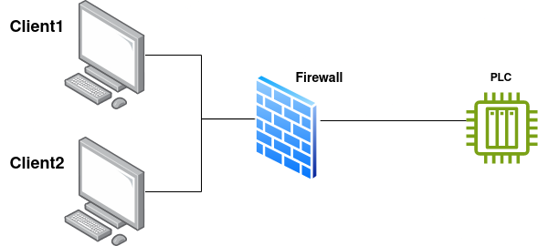

Administració de regles d'iptables en un entorn industrial
Introducció
Atenció!
Heu de fer servir el laboratori de Labtrainer iptables-ics
Este laboratori simula l'ús de Iptables per a limitar l'accés a la xarxa d'un component PLC en un entorn indistrial o de tecnología operativa.
L'escenari concret s'il·lustra en la següent imatge:

Quan la configuració és correcta:
- El client 1 només pot accedir al PLC via SSH i HTTP (port 8080)
- El client 2 només pot accedir al PLC mitjançant MODBUS TCP i HTTP (ports 80 i 8080)
Realització del laboratori
Inicieu el laboratori com ja sabeu
I espereu a que vos retorne els terminals corresponents.
-
Wireshark està instal·lat en el contenidor que fa de firewall, utilitzeu-lo per a vore el tràfic que atravesa el firewall i per a depurar les vostres regles (interfaz
+ Tant en el client 1 com en el 2 per a explorar el serveis oferits pel PLC, podeu fer servir: El que iniciarà un client MODBUS senzill. Observa amb Wireshark el tràfic que es genera, notant quin port TCP com a destí utilitza el client quan es conecta amb el PLC.etho) -
Inicia Firefox en cada client:
I accedeix a: -
Per últim, accedeix per ssh des dels clients al PLC (no fa falta establir la conexió, només comprobar que n'hi ha accés):
Tasca
Fent ús de Iptables instal·lat en el contenidor que fa de firewall, escriu unes regles per a que:
- El client 1 només puga accedir al PLC per SSH i HTTP (port 8080 únicament)
- El client 2 només tinga accés mitjançant MODBUS TCP i HTTP (ports 80 i 8080)
- No se permeteix cap altre tàfic dels clients al PLC
- Inclou una regla que puga logar totes les accions
Tip
Podeu agafar com a referencia el script d'exemple que teniu al firewall example_fw.sh
Fixeu-vos que en este script les IP poden ser diferents de les que vosaltres necessiteu.
L'última línea del script loguea els missagte a: /var/log/iptables.log. Si incloeu esta directiva en la vostra configuració, podeu observar quan iptables fa drop dels paquets pertinents.
Tasca
Fent ús del comando tail -f /var/log/iptables.log, mostra que es fa drop de paquets que no han d'estar permesos per Iptables.
Mostra-lo igualment a Wireshark.